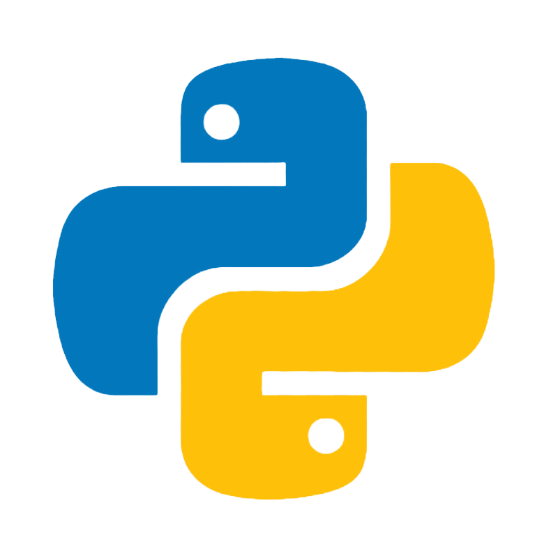
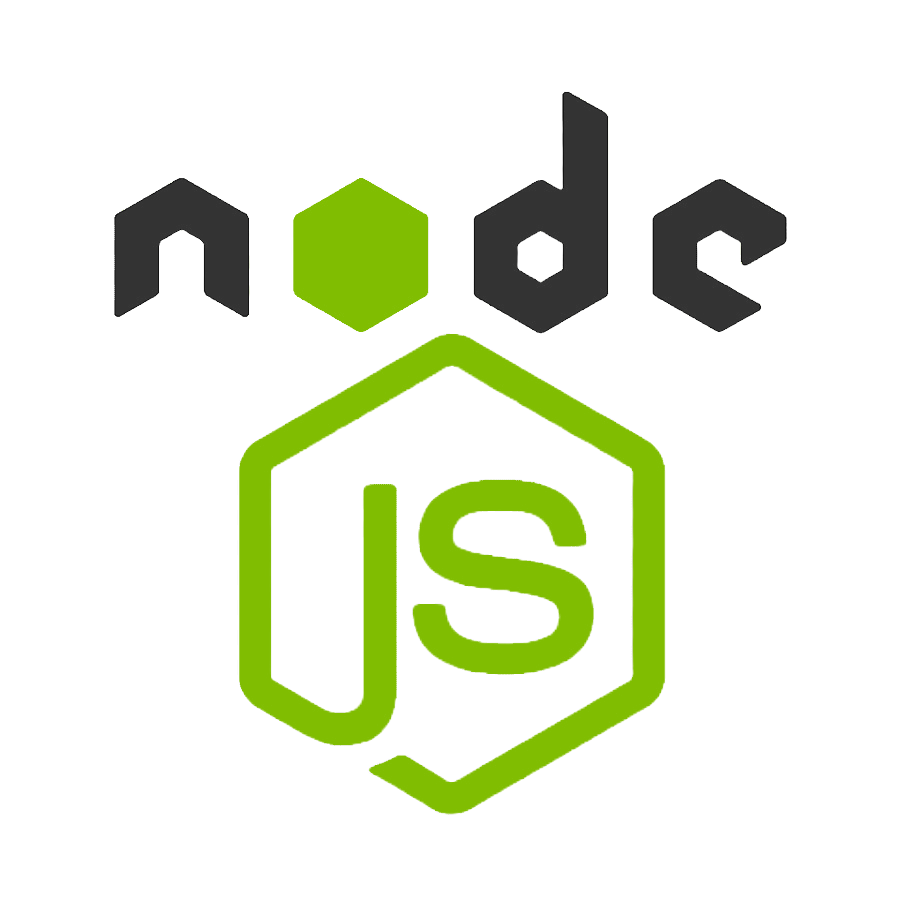

About Me

Hello! I’m Justin Balbuena, a passionate software engineer based in New York. I am currently a junior at Manhattan College, where I am pursuing my degree in Computer Science. My interests lie in coding, problem-solving, and continuously learning new technologies and frameworks.

Projects
My Favorite Projects
 Impossible Dash
In my "Blockchain and Cryptocurrencies" class, I was tasked with creating a decentralized blockchain application. That idea evolved into Impossible Dash — a competitive web game where players try to achieve the highest score across a network of nodes. Inspired by Geometry Dash, I used the KAPLAY.js library to build a fast-paced and frustrating (but addictive) platformer. My goal was to make it just annoying enough that people would want to try again — and after watching classmates playtest it, I think I found the right balance. The game is mostly decentralized thanks to the GUN.js library, which syncs scores across all connected nodes. The only centralized component is account creation, which uses Mongoose.js and stores a username, password, and email in a MongoDB Atlas cluster. Every minute, the system selects the highest score recorded across all nodes and stores it as a new block in the game's blockchain. After that, the score leaderboard is cleared and players start fresh.

Pokemon Type Effectiveness Quiz
A combination between my love for Pokemon and a quickly developed love of Python. I started working on this project after I completed a sizable chunk of a Python Udemy course I've been learning from. I used the StreamLit package as a basis for the front-end and started with a json file that I filled with type advantage values. From there I created functions to read and write from the json file to keep track of data. In the future I plan on adding implementation to be able to reset the values and guess a new type pairing wihtout having to restart the page, creating a few different formats for inputing values, and a new section to be able to guess a pokemon's type.
Chat Room Website
I recently completed a nodejs course on udemy and this was the final project for the course. Learning nodejs has been a nice jump back to web development for me as its what started my journey into computer science. I plan to make a bigger chat room website in the future for my University with a friend and this project is a great starting point for it.
Numerical Computation Methods GUI
For my Numerical Computation class in my junior year's fall semester, my final project was to to work in a group and create a GUI where the user could use input data to use various functions like Gaussian directed elimination, Langrange Interpolation, Nonlinear Optimization, and much more. My group of five chose to implement every single numerical method we had been tasked to create as individual projects over the semester and we created it using Python's Streamlit library.
More Projects
Pokemon Database
A group final project done for my databases class. It serves as a Pokemon database where users could save the pokemon they've caught to it and find some basic information on pokemon.